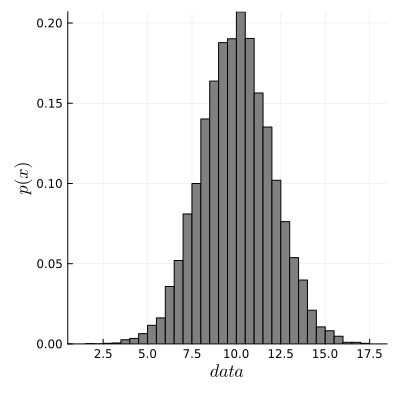

McmcHermes.jl
A documentation for the McmcHermes package.
McmcHermes is a pure-Julia implementation of Metropolis Hasting Algorithm under an MIT license. McmcHermes will help you if you want to estimate model parameters or sample a probability density distribution.
Installation
using Pkg
Pkg.add("McmcHermes")Basic Usage
This guide assumes that you already have define your likelihood, prior and the logarithm of the posterior probability as in the example below.
Sampling
If you want to draw samples from two Gaussian distributions, you would do something like:
function pdf(X::Number, params::Vector)
s1, s2, mu1, mu2 = params[1], params[2], params[3], params[4]
return 1 / (sqrt(2 * pi) * s1) * exp( -0.5*((X - mu1)/s1)^2 ) + 1 / (sqrt(2 * pi) * s2) * exp( -0.5*((X - mu2)/s2)^2 )
end
function gaussian_function(X::Vector, params::Vector)
x_values = collect(range(minimum(X), maximum(X), length=length(X)))
s1, s2, mu1, mu2 = params[1], params[2], params[3], params[4]
return 0.5 ./ (sqrt(2 * pi) .* s1) .* exp.(-0.5*((x_values .- mu1)./s1).^2) .+ 0.5 ./ (sqrt(2 * pi) .* s2) .* exp.(-0.5*((x_values .- mu2)./s2).^2)
end
using McmcHermes
params = [3, 1.5, -5, 5]
interval = [-20, 20]
sampling = McmcHermes.sampler(pdf, 10000, interval, params)
x_values = Vector{Float64}(range(interval[1], interval[2], 100))
histogram(sampling, xlabel=L"samples", ylabel=L"p(x)", xguidefontsize=12, color=:gray, yguidefontsize=12, normalize=:pdf, show=true, label="samples")
plot!(x_values, gaussian_function(x_values, params), lw=3, size=(500,400), label="Function", lc=:orange, show=true)
Parameter estimation
To estimate parameters $\mu$ and $\sigma$ from a gaussian distribution. First, you need some data
using Distributions, Plots, LaTeXStrings, DataFrames
mu, sigma = 10, 2 # truths
l_b, u_b = 0, 20
d = Truncated(Normal(mu, sigma), l_b, u_b)
N = 10000
data = rand(d, N)
histogram(data, legend=false, size=(400,400), xlabel=L"data", show=true, normalize=:pdf, ylabel=L"p(x)", xguidefontsize=12, color=:gray, yguidefontsize=12)
Now, define likelihood and prior
function log_likelihood(X::Vector, parameters::Vector)
mu, sigma = parameters[1], parameters[2]
y = 1 ./ (sqrt(2 * pi) .* sigma) .* exp.( -0.5 * ((X .- mu)./sigma).^2 )
return sum(log.(y))
end
function log_prior(parameters::Vector)
mu, sigma = parameters[1], parameters[2]
if 5.0 < mu < 15.0 && 0.0 < sigma < 4.0
return 0.0
end
return -Inf
end
function log_probability(X::Vector, parameters::Vector)
lp = log_prior(parameters)
if !isfinite(lp)
return -Inf
end
return lp + log_likelihood(X, parameters)
endThen, define the number of walkers, iterations, dimension of the parameter space and the initial guess.
using McmcHermes
mu, sigma = 10, 2
initparams = Vector{Float64}([mu, sigma])
n_iter, n_walkers = 5000, 30
n_dim = 2
seed = rand(n_walkers, n_dim) * 1e-4 .+ transpose(initparams)
chains = McmcHermes.run_mcmc(log_probability, data, seed, n_iter, n_walkers, n_dim, a=0.01)
println(size(chains)) # (5000, 30, 2)The convergence of the chains can be validated by the Gelman-Rubin's diagnostic:
println("Gelman Rubin Diagnostic: ", McmcHermes.get_gelman_rubin(chains)) # 1.0206366055Finally, plot the chains.
labels = Tuple([L"\mu", L"\sigma"])
x = 1:size(chains)[1]
p = []
for ind in 1:n_dim
push!(p, plot(x, [chains[:,i,ind] for i in 1:size(chains)[2]], legend=false,
lc=:black, lw=1, ylabel=labels[ind], alpha = 0.1, xticks=false))
end
plot(p[1], p[2], layout = (2,1))
plot!(size=(600,200), xlims = (0, size(chains)[1]), show=true)
Chains can also be plotted in a corner. To do so, get the flat chain
flat_chains = McmcHermes.get_flat_chain(chains, burn_in=100, thin=10)
println(size(flat_chains)) # (14901, 2)
mean_posterior = quantile(flat_chains[:, 1], 0.5) # 10.0273672
std_posterior = quantile(flat_chains[:, 2], 0.5) # 1.9998453
using PairPlots, CairoMakie
table = (; x=flat_chains[:,1], y=flat_chains[:,2],)
fig = pairplot(table, labels = Dict(:x => L"\mu", :y => L"\sigma"))
Developed by J. Alfonso.